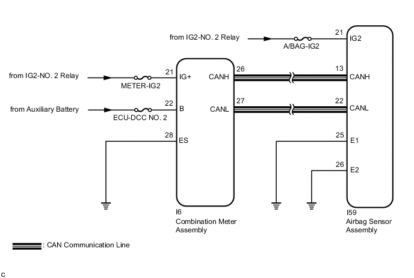

AIRBAG SYSTEM SRS Warning Light does not Come ON
DESCRIPTION
The SRS warning light is located in the combination meter assembly.
When the SRS is normal, the SRS warning light comes on for approximately 6 seconds after the power switch is turned from off to on (IG), and then goes off automatically.
If there is a malfunction in the SRS, the SRS warning light comes on to inform the driver of a problem.
If a malfunction occurs in the airbag sensor assembly, combination meter assembly or wire harness connected to the airbag sensor assembly or combination meter assembly, the SRS warning light turns on.
When terminals TC and CG of the DLC3 are connected, DTCs are displayed by blinking of the SRS warning light.
The SRS is equipped with a voltage-increase circuit (DC-DC converter) in the airbag sensor assembly in case the source voltage drops.
When the auxiliary battery voltage drops, the voltage-increase circuit (DC-DC converter) functions to increase the voltage of the SRS to normal voltage.
A malfunction in this circuit is not stored in the airbag sensor assembly. The SRS warning light automatically goes off when the source voltage returns to normal.
The signal to illuminate the SRS warning light is transmitted from the airbag sensor assembly to the combination meter assembly via CAN communication.
WIRING DIAGRAM

CAUTION / NOTICE / HINT
Note
-
After turning the power switch off, waiting time may be required before disconnecting the cable from the negative (-) auxiliary battery terminal. Therefore, make sure to read the disconnecting the cable from the negative (-) auxiliary battery terminal notices before proceeding with work.
-
Inspect the fuses for circuits related to this system before performing the following procedure.
PROCEDURE
-
CHECK AUXILIARY BATTERY VOLTAGE
-
Measure the voltage of the auxiliary battery with the power switch off.
Standard Voltage 11 to 14 V Result Proceed to OK NG
NG 
INSPECT CHARGING SYSTEM AND AUXILIARY BATTERY Click here
OK 
-
-
CHECK CONNECTOR
-
Turn the power switch off.
-
Disconnect the cable from the negative (-) auxiliary battery terminal.
CAUTION:
Wait at least 90 seconds after disconnecting the cable from the negative (-) auxiliary battery terminal to disable the SRS system.
-
Check that the connector is properly connected to the combination meter assembly.
OK The connector is properly connected. Tech Tips
If the connector is not properly connected, reconnect the connector and proceed to the next inspection.
-
Disconnect the connector from the combination meter assembly.
-
Check that the terminals of the connector are not deformed or damaged.
OK The terminals are not deformed or damaged. Result Proceed to OK NG
NG
REPAIR OR REPLACE CONNECTOR
OK
-
-
CHECK WIRE HARNESS (COMBINATION METER ASSEMBLY - BODY GROUND)
-

*a Front view of wire harness connector
(to Combination Meter Assembly)
Connect the cable to the negative (-) auxiliary battery terminal.
-
Turn the power switch on (IG).
-
Measure the voltage according to the value(s) in the table below.
Standard Voltage Tester Connection Condition Specified Condition I6-21 (IG+) - Body ground Power switch on (IG) 11 to 14 V I6-22 (B) - Body ground Power switch off 11 to 14 V -
Turn the power switch off.
-
Measure the resistance according to the value(s) in the table below.
Standard Resistance Tester Connection Condition Specified Condition I6-28 (ES) - Body ground Always Below 1 Ω Result Proceed to OK NG
NG
REPAIR OR REPLACE WIRE HARNESS
OK
-
-
CHECK SRS WARNING LIGHT
-
Disconnect the cable from the negative (-) auxiliary battery terminal.
CAUTION:
Wait at least 90 seconds after disconnecting the cable from the negative (-) auxiliary battery terminal to disable the SRS system.
-
Connect the connector to the combination meter assembly.
-
Disconnect the connector from the airbag sensor assembly.
-
Connect the cable to the negative (-) auxiliary battery terminal.
-
Turn the power switch on (IG) and check the SRS warning light condition.
OK After the primary check period, the SRS warning light turns off for approximately 10 seconds and then turns back on. Tech Tips
The primary check period is approximately 6 seconds after the power switch is turned on (IG).
Result Proceed to OK NG
OK
REPLACE AIRBAG SENSOR ASSEMBLY Click here
NG
REPLACE METER CIRCUIT PLATE Click here
-